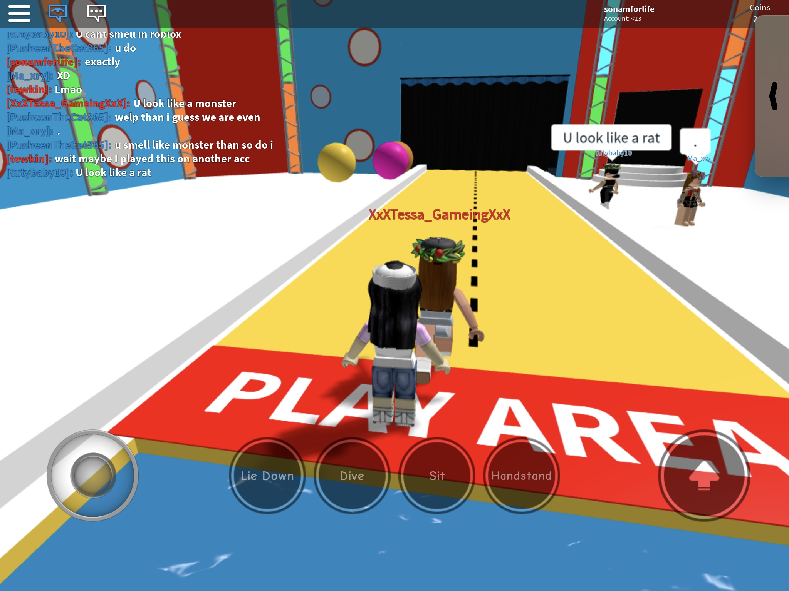
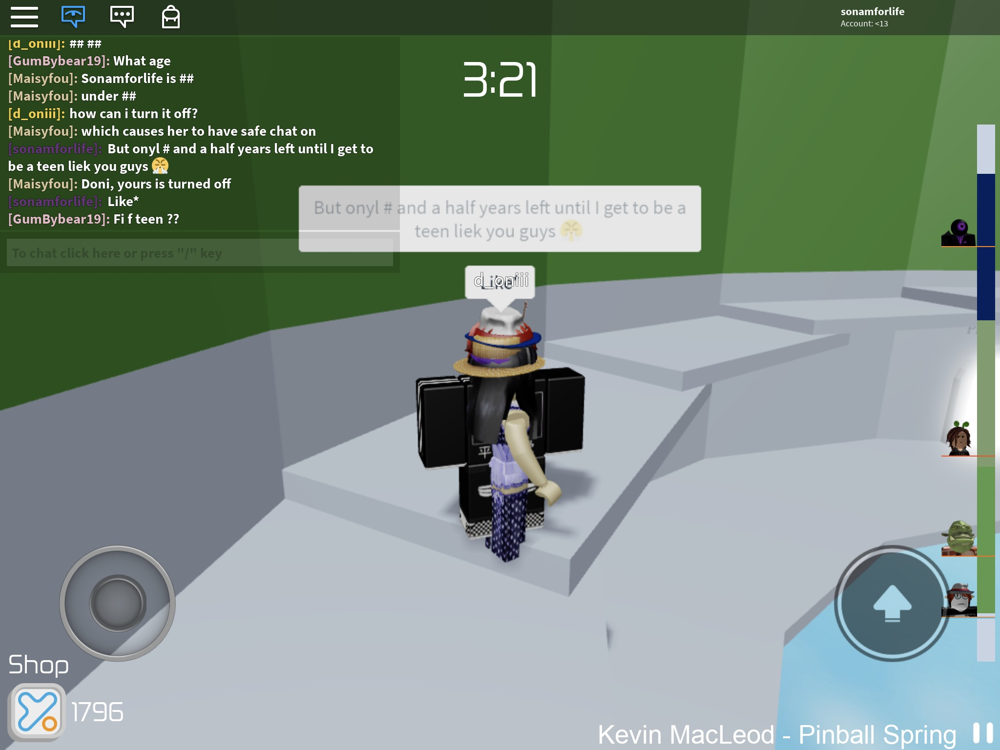
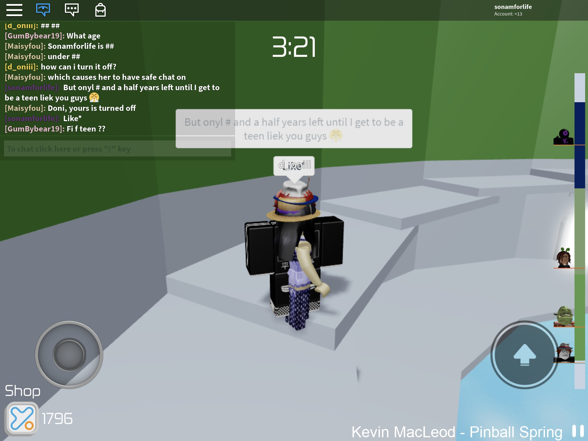
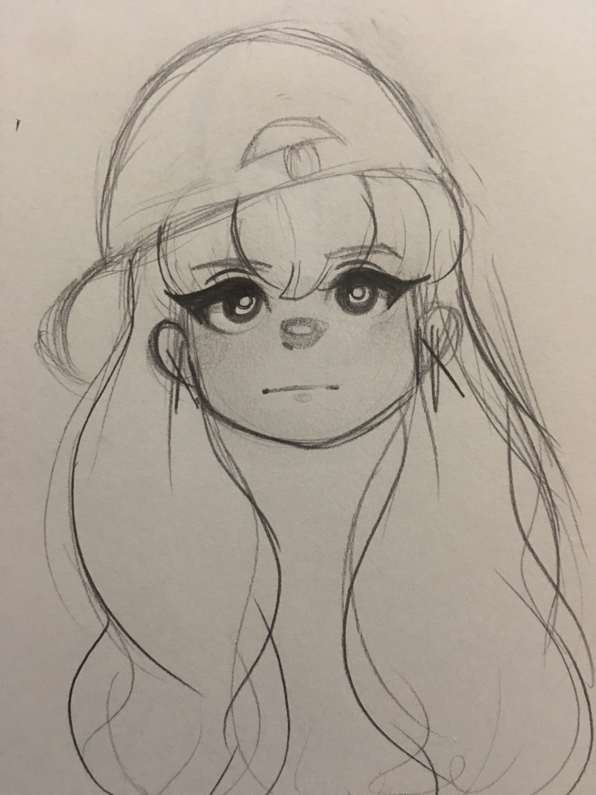
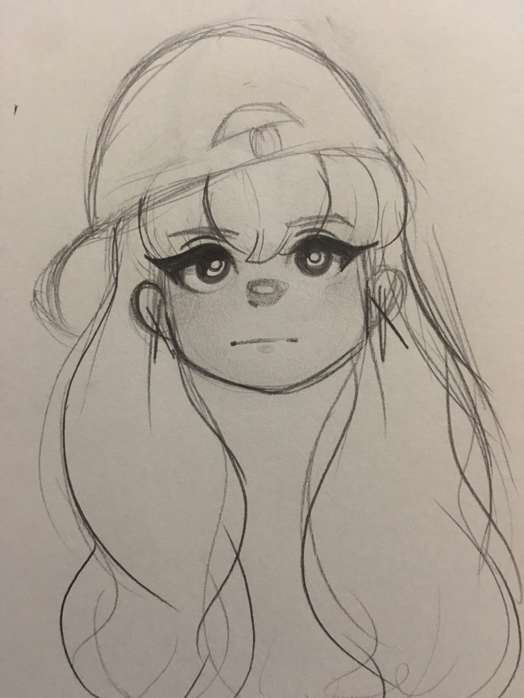
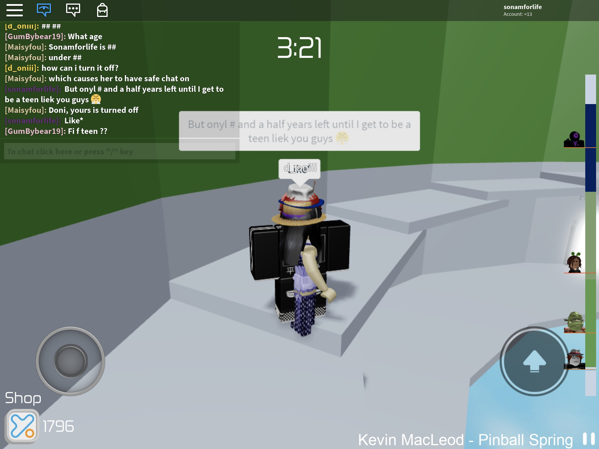
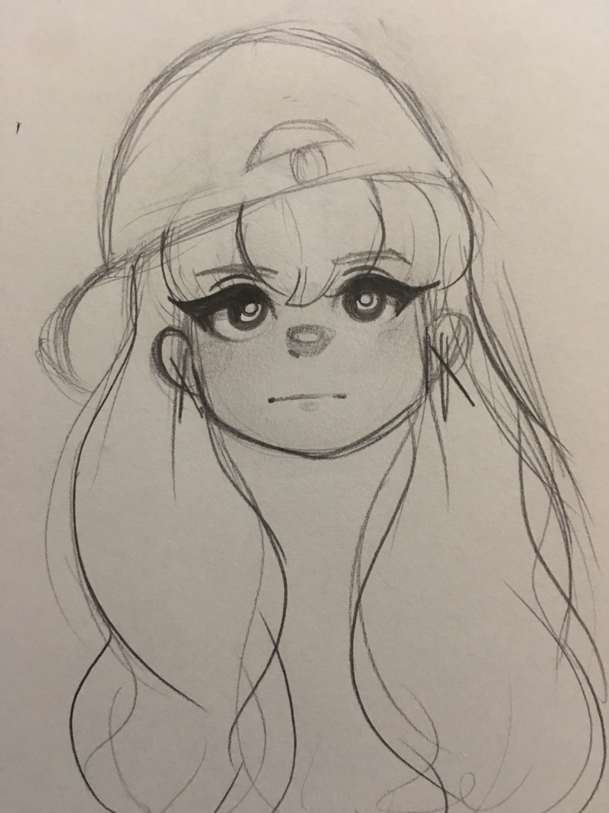

Memories We Shared


 


 


Hey Madeline,
I’ve been thinking about reaching out for a while now, and I know I might not even have the right to ask for your time, but I still wanted to say what’s been on my heart.
I just want to start by saying that I’m truly sorry. I know that what I have done may hurt you and many others, and I take full responsibility for it. There hasn’t been a day that I haven’t thought about how much I regret my actions and how I wish I had handled things differently. The last thing I ever wanted was to lose you as a friend, and yet, I know that my choices led us here.
You were never just a friend to me, you felt like a sister I never had, and losing that has been one of the hardest things I’ve had to face. I don’t expect things to go back to how they were, and I don’t expect you to forgive me if you’re not ready or don’t want to. More than anything, I just want you to know that I see the hurt I caused, and I’m so, so sorry for it.
I also understand and respect the boundaries you’ve set, and if you’d prefer not to respond, I won’t push. I just hope that, even if we never speak again, you can know that I truly valued our friendship, and I will always appreciate the time we had.
No matter what, I hope you’re doing okay. I want nothing but the best for you, and if you ever decide to reach out—even if it’s years from now, I’ll always be here.
With sincerity, Joey/Elvis

